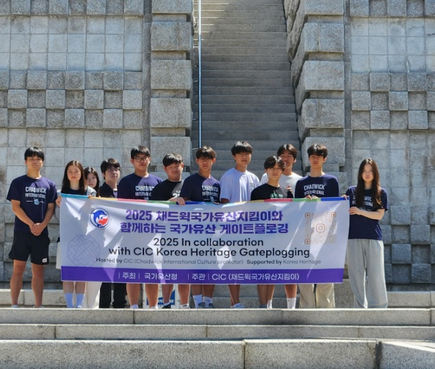
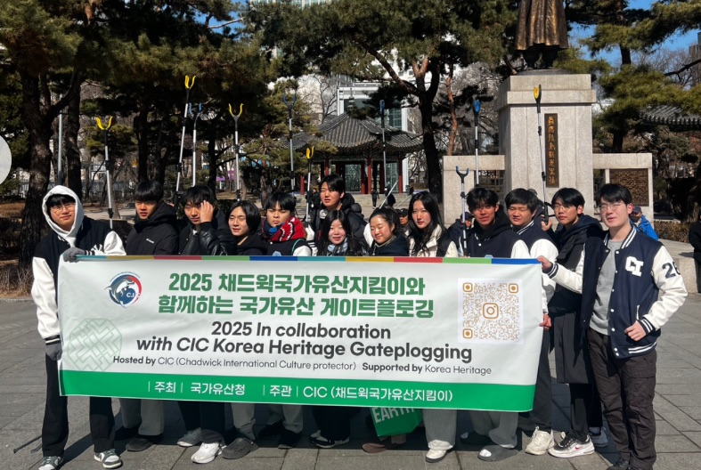
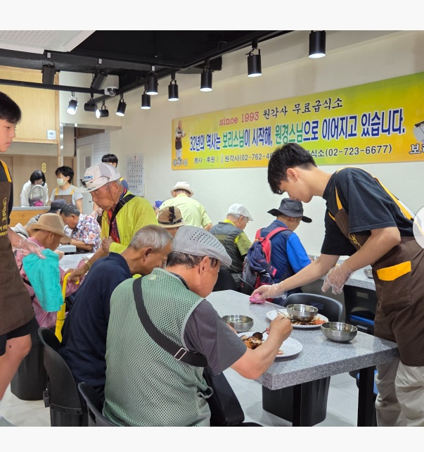
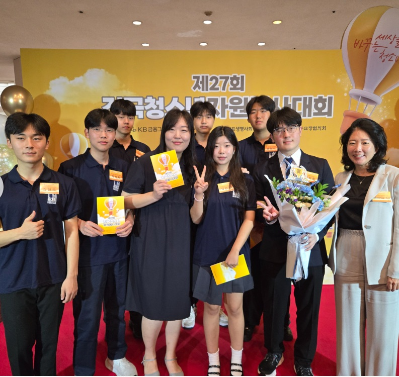
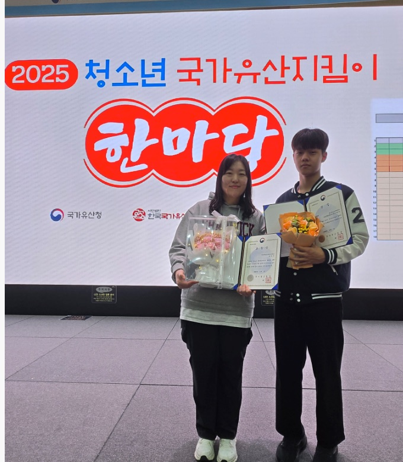

Other interests and activities
CIC Club
Chadwick International Cultural Protectors Club: caring for and sharing Korea’s cultural heritage through service.


Cultural Protectors Club
As leader of the Cultural Protectors Club, I led more than 25 members in service at Korea’s historic sites and in the local community.
Our work included plogging (picking up litter while jogging) at national heritage sites such as Tapgol Park, volunteering at a soup kitchen run by Wongaksa Temple, and serving as docents at Nakseonjae Hall in Changdeokgung Palace, guiding visitors through the hall.
This work was recognized with the Grand Prize and the Minister’s Award at the 2025 National Youth Volunteering Competition, and with a Plaque of Appreciation from The Imperial Household Culture Foundation of Korea.
- Led 25+ members
- Grand Prize & Minister’s Award, 2025 National Youth Volunteering Competition
- Plaque of Appreciation, The Imperial Household Culture Foundation of Korea


